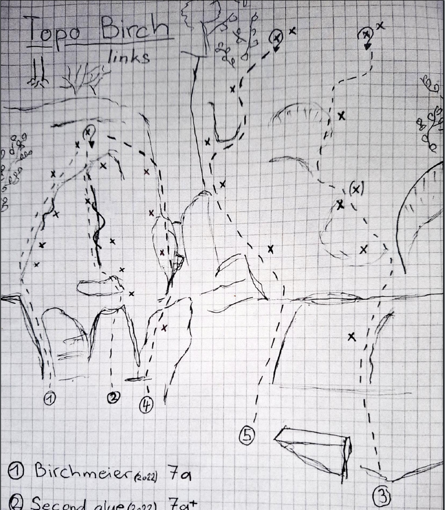
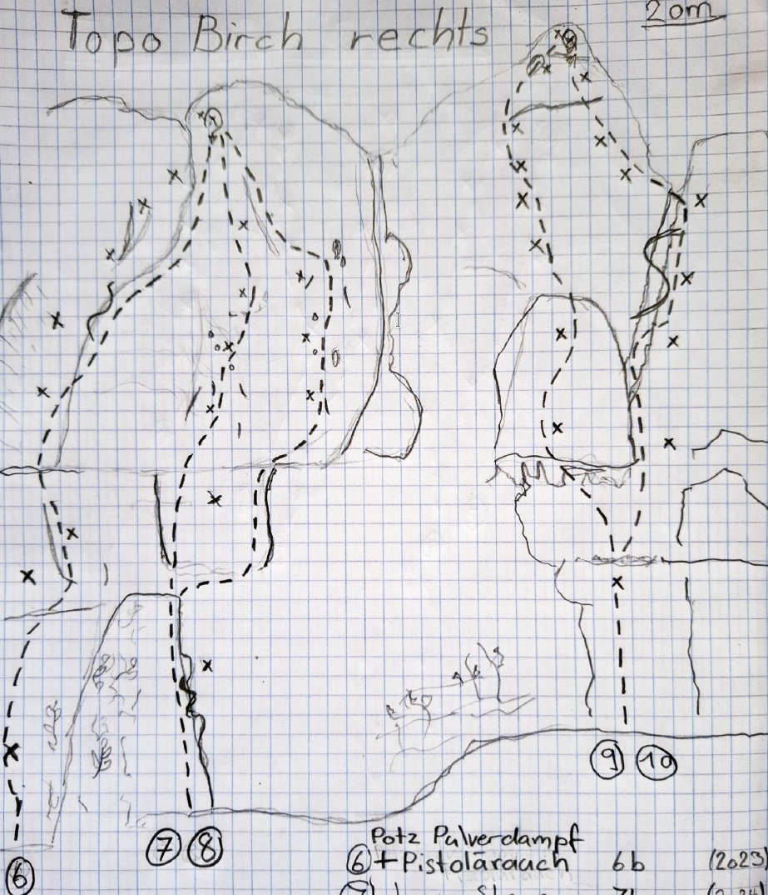
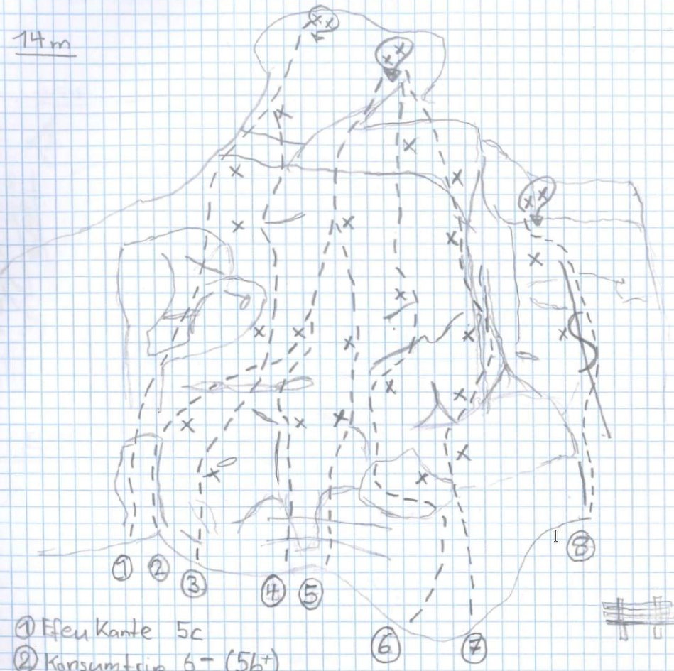

Birch Links
| # | Name | Grad | Notes |
|---|---|---|---|
| 1 | Birchmeier | 7a | |
| 2 | Second Glue | 7a+ | |
| 3 | Dän | 7c | |
| 4 | Grinikl | 6a+ | |
| 5 | Linea Gialla | 7b+ |
Birch Rechts
| # | Name | Grad | Notes |
|---|---|---|---|
| 6 | Potz Pulverdampf und Pistolerauch | 6b | |
| 7 | Jaron Stone | 7b | |
| 8 | Luan's Rock | 7a | |
| 9 | Artemisia | 7a+ | |
| 10 | Karde | 6c |
Zustieg
Längenberg Unten
| # | Name | Grad | Notes |
|---|---|---|---|
| 1 | Efeukante | 5c | |
| 2 | Konsumtrip | 5b+ | |
| 3 | Kantenlose Frechheit | 6b | ohne Kante |
| 4 | Kapitalistenbauch | 6b | |
| 5 | Manon’s Rock | 6c | Sitzstart |
| 6 | Pieds en Ciel | 6b | |
| 7 | Ameiseleu | 7a+ | |
| 8 | Zertifikat | 7a+ |